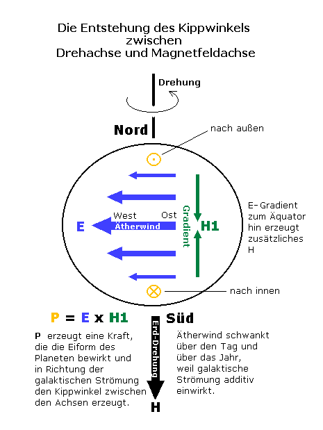

Nehmen wir das
Beispiel der Erde. Sie bewegt sich linksdrehend auf ihrer Jahresbahn
und dreht sich in die gleiche Richtung einmal pro Tag, immer so betrachtet,
dass man auf den geometrischen Nordpol draufschaut.
Ihr Äther-Gegenwind
hat also die entgegengesetzte Richtung: rechtsdrehend, d.h. immer
von Ost nach West.
Die Geschwindigkeit des Äther-Gegenwindes beträgt nur 1/3
der Geschwindigkeit der Erdoberfläche gegen das ruhende System.
Der größere Teil des Äthers wird also mitgeführt
und nimmt an der linksdrehenden Rotation teil. Der Äther-Gegenwind
ist im Grunde nur "weniger linksdrehend" und nicht absolut
rechtsdrehend. Trotzdem entspricht er dem Reibungsanteil der Bewegung
und bedeutet Energieverlust. Der Löwenanteil mitgeführten
Äthers fördert die Drehung der Erde um die eigene Achse,
ebenso wie der ständig strömende Ätherfluss auf der
Jahresbahn ihre Vorwärtsbewegung fördert, indem sie darauf
schwimmt wie ein Schiff auf dem Golfstrom.
Die
Erde hat den magnetischen Südpol neben dem geometrischen Nordpol,
und jeder Magnet hat beim Blick auf den Südpol eine rechtsdrehende
Magnetfeldstruktur. Es passt also zusammen: Ätherwindströmung
und Erdmagnetfeld haben den gleichen Drehsinn. Es stellt sich die
Frage nach dem ursächlichen Zusammenhang. Ich glaube nicht, dass
die Quelle des Erdmagnetfeldes im flüssigen oder festen Eisenkern
zu finden ist. Wir wissen nicht einmal genau, ob es den gibt.
Da der Äther-Gegenwind
E am Äquator sein Maximum haben muss, existiert ein Gradient
dE in Richtung Nord-Süd, der am Äquator sein Vorzeichen
wechselt. Neben dem durch den Äther-Gegenwind, der nahezu kreisförmig
fast parallel zur Erdoberfläche fließt, insgesamt induzierten
Magnetfeld, der die Erddrehung zu bremsen versucht, entsteht durch
den Nord-Süd-Gradienten eine weitere Magnetfeldschwankung, in
der folgenden Zeichnung mit H1 bezeichnet.

Der
Pointingvektor P=E x H1 zeigt auf der Nordhalbkugel nach außen,
quasi aufsteigend, und auf der Südhalbkugel nach innen. Wenn
diese Kraft auf die Gestaltbildung der Erde Einfluss nehmen konnte,
dann war die Folge, dass die Erde am Nordpol dicker ist als am Südpol.
Weiterhin kann diese Kraft wie ein aufsteigendes Kraftfeld für
die Nordhalbkugel gesehen werden, während es auf der Südhalbkugel
absteigend wirkt, in Richtung der Gravitation.
Zusätzlich
muss berücksichtigt werden, dass der Ätherwind auch zeitlich
nicht konstant ist, weil er von der galaktischen Ätherströmung
überlagert wird, die als Projektion auf die Ekliptikebene eine
feste Richtung hat, jedenfalls für astronomisch kurze Epochen.
Dieses
tägliche Maximum und Minimum bewirkt wahrscheinlich die Kippung
von 11 Grad zwischen Drehachse und Erdmagnetfeld. Eine solche Kippung
ist bei allen Planeten vorhanden.
Die
Kippung wiederum ermöglicht den Schwenk-Effekt wie beim Gyro-Kreisel,
der eigentlich die Drehung des Planeten antreibt, wiederum aus der
galaktischen Strömung. Die Antriebsenergie muss größer
sein als der Verlust durch die drehbremsende Ätherwind-Gegeninduktion.
Das
alles würde nicht stattfinden, wenn die Erde ein Zylinder wäre.
Dann gäbe es keine Äquatorlinie, keinen E-Feld-Gradienten
dorthin und keine periodische Kippwirkung, weil gar keine Kippwirkung.
Desweiteren kein Schwenk-Effekt, also keinen Drehungsantrieb. Ohne
Drehung kein Leben, kein mitgenommener Ätherwind, keine Kühlung,
keine atomare existentielle Stabilität, die Materie zerstrahlt
schneller.
Hinweis1:
Die 1/3-Geschwindigkeit gilt
nicht über das ganze Jahr, weil auch die Jahresbahn bestimmten
Schwankungen unterworfen ist. Weiteres (Text älter) siehe hier,
unten: Das Jahr eines Planeten.
Hinweis2:
Die Veröffentlichungen
von F.von Reichenbach bezüglich seiner Experimente mit Magneten
sind hier kurz erwähnt
und weisen experimentell auf den Äther-Gegenwind hin.
weiter